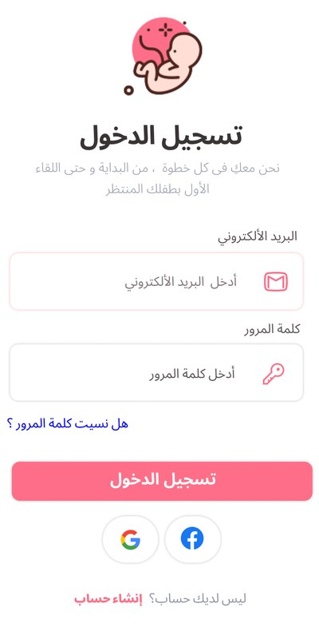

I connect design, code, and data to turn everyday needs into useful digital experiences. Currently studying Mobile Application Design and Development at UCAS.
I enjoy both sides of an application: the experience people see and the logic that makes it work.
My studies combine mobile development and interface design. I work with Java, Figma, and SQL, exploring how clear user flows connect to well-organized code and data.
From pregnancy-care interfaces and healthcare coordination to academic guidance and relational databases, my projects help me practice solving practical problems. Taking part in IEEE Xtreme also strengthened my teamwork and problem-solving mindset. I’m continuing to strengthen my Android, UI/UX, and web development foundations.
Skills developed through hands-on design and programming projects.
Development
Java & object-oriented programming
Android & XML layouts
ViewBinding & RecyclerView
JavaFX & FXML
Interface design
Figma
Interactive prototypes
User flows & wireframes
Arabic RTL interfaces
Data & structure
SQLite
SQL Server & T-SQL
Entity relationship diagrams
Relational data modeling
Currently learning: semantic HTML and strengthening my web development foundations.
Projects and Experience
Six projects and a global programming competition experience, covering application development, UI/UX design, databases, and teamwork.
Jenini — Pregnancy Care

Interface design
Android application & UI design
A pregnancy companion project that brings weekly information, personal appointments, and emergency contacts into one place. The Android implementation uses Java and SQLite; the interface concept was designed in Figma.
My focus: Android application development and interface design.
What the implementation includes:
Local user registration and sign-in.
Pregnancy week and estimated due date calculations.
Weekly information and tips presented through Android screens and lists.
Appointment records and emergency contacts associated with each user.
The database associates appointments and emergency contacts with a user ID. Appointment queries filter by that ID, and foreign-key cascade rules remove related records when a user is deleted.
The design description also explores shared partner access, reminders, and mood tracking. These are design concepts, not features claimed as complete in the Android implementation.
This project is an educational and organizational companion, not a medical service.
A mobile design concept for students making academic and career decisions. The project explores how major discovery, study tools, and academic progress could fit into a clear mobile experience.
My role: UI/UX designer. Deliverable: Figma prototype and published design case study.
A journey shaped by the student’s stage:
Choose a starting point: prospective student, university student, or graduate.
Follow a relevant path toward choosing a major, organizing studies, or exploring careers.
Explore the proposed tools through the interface prototype.
Tools: Figma. Design work: user flows, wireframes, interface design, and prototyping.
Design intent and implementation status:
The concept includes major recommendations, study summaries, quizzes, and an academic progress dashboard. AI describes the proposed product direction; this portfolio presents the UI/UX work, not a deployed AI system or a published mobile application.
A SQL Server project for organizing training-center records, from courses and class registrations to attendance, payments, and certificates. The deliverable is a database model and SQL implementation.
Simplified model: students and classes are connected through registrations (15 tables in total).
My focus: relational data modeling and SQL development.
How the data fits together:
Courses belong to departments; classes connect courses with trainers and rooms.
Registrations connect students with classes.
Payments and certificates reference registrations.
Evidence: 15 table definitions, an ERD, relational schema images, SQL scripts, query screenshots, and a project report.
Technical highlight: protecting data relationships
Foreign keys connect related records. A unique constraint prevents duplicate registrations for the same student and class. A check constraint requires room capacity to be greater than zero.
The query files demonstrate joins, sorting, and grouped results with HAVING.
An appointment-management project that connects JavaFX booking and appointment-list screens to an object-oriented hospital model.
My focus: Java programming, desktop interfaces, and object-oriented modeling.
Interface
FXML screens for booking and viewing appointments.
Application logic
Classes represent people, staff, patients, appointments, and medical records.
Storage
File-based data handling for doctors and appointments.
Technologies: Java, JavaFX, FXML, Maven, OOP.
Technical highlight: checking doctor availability
Before adding an appointment, the system checks the doctor, date, and hour against existing active appointments. A custom DoctorUnavailableException reports a conflicting booking.
The repository includes interface controllers, model classes, and file-handling code. It is a development project, not a claim of deployment in a hospital.
A menu-driven contact manager that supports adding, finding, deleting, and listing contacts. I built it as a Programming Language 1 project to practice classes, arrays, methods, and input handling.
Technical highlight: adding a contact checks for an existing phone number; deleting a contact shifts the remaining array entries to keep the list organized.
Scope: up to 20 contacts stored in memory during the current run, with partial name search and exact phone-number search.
As a UI/UX trainee, I contribute to designing a healthcare coordination platform with my team, helping shape clear interface screens for hospitals, blood banks, and blood donation workflows in Gaza.
My role: UI/UX trainee working with a team on interface design and user workflows.
This is an ongoing team project; my contribution is in UI/UX design, not a claim that the complete platform has been deployed.
IEEE Xtreme — Global Programming Challenge
03 / GLOBAL PROGRAMMING CHALLENGE
First time on the global stage. A result to remember.
I worked through time-bound programming challenges alongside my team in the IEEE Xtreme global programming competition—our first experience in the contest. I brought persistence, teamwork, and a willingness to learn under pressure to every problem.
Our team stood out at the sector level, proving that a first attempt can still make a meaningful mark. The experience strengthened my problem-solving mindset and made me even more excited about competitive programming.
Type: Team programming competition experience (not a software application project).
Education
Formal study and independent learning that inform my work.
Education and learning
Type
Program or course
Institution
Current study
Mobile Application Design and Development
University College of Applied Sciences (UCAS)
Additional learning
Graphic Design Fundamentals
Maarif platform (course listed in my CV)
Contact
Have a project in mind, a question, or feedback on my work? I’d love to hear from you.